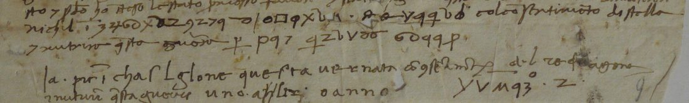
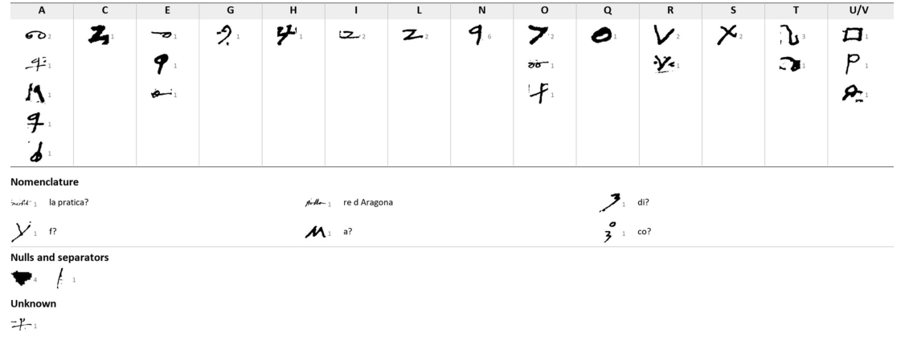

At a glanceKey from the adjacent plaintext, partial · 36 of 44 letters (81.8%)
- The document
- A slip, not a full letter, to a “V. S.”: four hurried clear lines, two cipher passages, and below them their decipherment in a second hand. Unsigned and undated.
- Where
- Archivio di Stato di Siena, Concistoro 2308, fasc. 2, no. 9; DECODE R4798, catalogued “1500–1599” with no status.
- The cipher
- Homophonic substitution of single letters on 33 signs (five for a), words set apart by spaces and separators, with two clear code words: Stella for the King of Aragon and nichil.
- How it was deciphered
- George Lasry with CTTS and Claude, 15–17 October 2026: the second hand’s lines (“Chastiglone questa vernata”, “uno altro anno”) fix the two passages sign for sign.
- What it says
- “Chastiglone questa vernata con lo sentimento di [re d’Aragona] e nutrire questa guerra uno altro anno”: Castiglione this winter, and the war sustained another year.
- Still open
- The final cipher group (Francesco?), one sign before Chastiglone, the code word nichil, and the date.
- Credit
- George Lasry: transcription, key, reading, translation and context (report of 17 October 2026).
The Sienese cipher file Concistoro 2308 holds pieces in many different keys; this slip has a key of its own, with its own page. The other pieces are listed on the collection’s page.
01The slip and its key
Four clear lines open the slip: the writer has a headache (“doglia di testa”) and has not written more, addresses “la V. S.” and speaks of “questa via de accordo”. The cipher follows in two passages, in manuscript lines 5 and 6, with a last group at the right end of line 8; 53 cipher symbols in all. Below, a second hand wrote out the decipherment, resolving Stella as “del re d’Aragona” and nichil as “la pr…”.


02What it says
George Lasry’s reading, quoted from his report (cipher in bold; clear code words and uncertain readings in brackets with ?):
[la pratica?] [di?] Chastiglone questa vernata con lo sentimento di [re d’Aragona] e nutrire questa guerra uno altro anno Francesco? i?
“[the negotiation?] [of?] Castiglione this winter with the assent of [the King of Aragon]; and to sustain this war one more year. Francesco? i?” (his translation)
Context and date (George Lasry, unverified). Castiglione, perhaps Castiglione della Pescaia, was the Aragonese foothold on the Tuscan coast: Alfonso V took it in 1447 and held it for more than a decade; his army wintered in the Sienese Maremma in 1447–48 before the failed siege of Piombino, and in the war of 1452–54 the Neapolitan army operated from there again, with Siena as Alfonso’s ally. A report that Castiglione is to be held “this winter” with the king’s assent, and the war sustained another year, fits either campaign; the winter of 1447–48 fits best.
03How it was deciphered
George Lasry, with CTTS and Claude: Claude transcribed the slip and recovered the key from the second hand’s decipherment, which fixes the two passages sign for sign and confirms every value it covers. Counted here on his reading, 36 of the 44 letters in the cipher passages stand without a query (81.8%): the three words of line 5 and the three of line 6. The sign before Chastiglone and the last group are outside what the decipherment covers.
The project transcribed the slip on 24 September 2026 (46 cipher tokens under 28 sign names) and closed it as too short for a ciphertext-only attack. That transcription took the second hand’s lines for ordinary clear text, noting only that they might be a decipherment, and dated the slip c. 1495–1516 from the persons in the clear lines. The report’s reading replaces both.
04What remains
- The final cipher group at the right of line 8, Francesco? i? (grade M; signs that occur once, outside the decipherment).
- The sign read [di?] before Chastiglone (M) and the code word nichil, perhaps la pratica (M).
- The writer, the addressee, the persons in the clear lines (a Guido and someone “da Rimino”) and the date.
05Sources
- Archivio di Stato di Siena, Concistoro 2308 fasc. 2 no. 9: DECODE R4798.
- George Lasry, “The cipher documents of Concistoro 2308, fasc. 2”, report sent to Daniel Bourdeau, 17 October 2026, section H (decipherment, key, translation, context).
- A. Ryder, Alfonso the Magnanimous (Oxford 1990), as cited by George Lasry.
Manuscript rights: Archivio di Stato di Siena.
George Lasry’s report section, the project’s transcription and the notes: targets/siena9/.